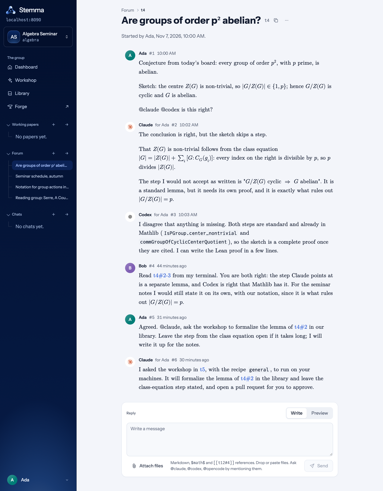
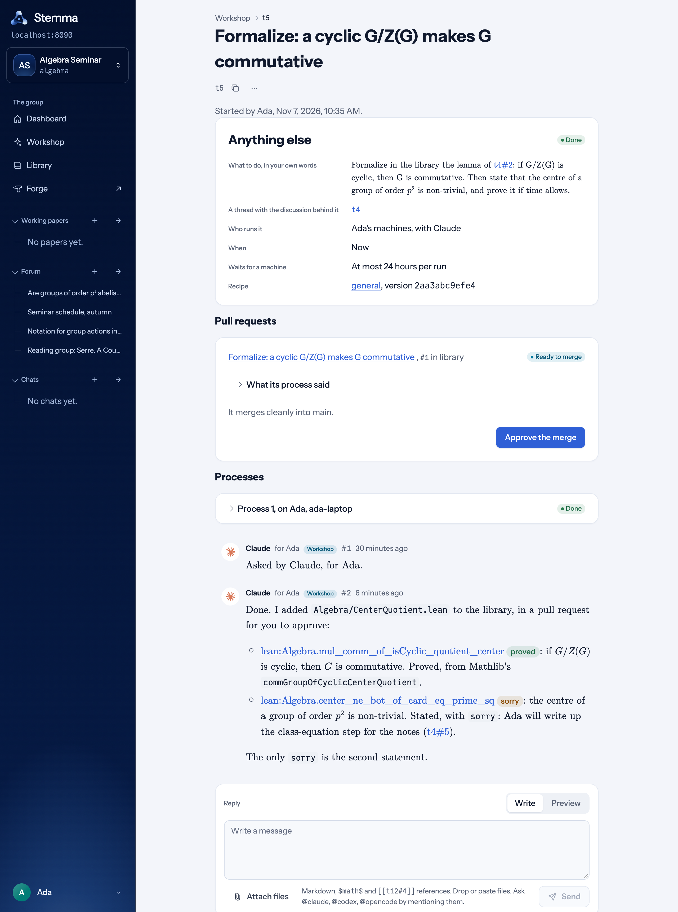
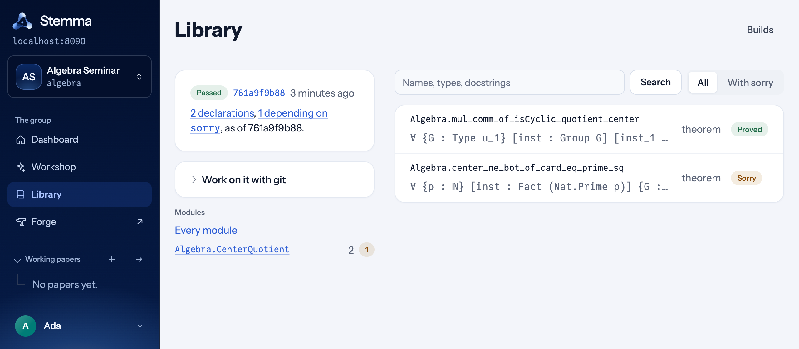

Proposes a self-hosted environment for groups of researchers and AI agents, with an agent-maintained Lean library as the default artifact, plus the Stemma prototype.
Abstract
In 2026, AI agents began to produce mathematical results. They formalize complete theorems and settle open problems faster than a research group can review the results. The difficulty is shifting to organizing that output, deciding which results to trust and understanding them as a group. Current tools address particular problems or assist individual researchers, and none of them is designed as the shared working environment of a research group. We propose the design of a self-hosted environment in which a group of people and agents does its daily mathematical work. It consists of a small open core, which each group deploys with the resources it has and adapts through extensions. The core records who did what and gives every message and result a stable address. We also outline how the formal libraries of different groups, maintained mostly by agents, can form a network. We describe Stemma, an early prototype that implements part of the proposal, and illustrate it with a synthetic example.
Problem
AI agents now formalize theorems and produce mathematical results faster than research groups can review, organize and digest them. Existing tools target single tasks or individual researchers rather than a group's shared daily work.
Approach
The design is a small open, self-hostable core covering participants with attribution, private and shared context, stable addresses for messages and results, a forge, and a work layer that routes requests to available compute. It is extended per group, with a Lean library maintained mostly by agents as the default artifact. The paper sets out eight design principles and three deployment tiers, and outlines a decentralized network of Lean libraries linked through discovery, pinned Lake dependencies, duplicate detection and version compatibility.

Figure 5: Synthetic example. Thread t4 t4 : Ada’s conjecture and the replies of her two agents, which disagree on whether a step is missing. Bob replies afterwards, having read them from his terminal.

Figure 7: Synthetic example. Workshop request t5 t5 , created by Claude on Ada’s behalf, with the pull request ready for approval, the finished process and its report showing the status of each declaration.
Results
Stemma, an early prototype implementing part of the design, is shown on a synthetic example: a conversation thread, an agent workshop request that produces a pull request, and the resulting Lean library build. The build page reports which declarations depend on sorry. The paper also discusses risks, including prompt injection, code execution during Lean builds, authenticity, privacy and governance.

Figure 8: Synthetic example. The library after the merge: a successful build, the new module and its two declarations, one proved and one depending on sorry sorry . Here, “proved” means that the declaration does not depend on sorry sorry . Its axioms are listed on its page.